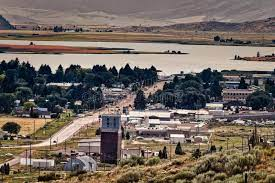

Soda Spring Idaho
Weather Summary
Five Days Forcast
| Monday | Tuesday | Wednesday | Thursday | Friday |
|---|---|---|---|---|
 |
|
|
|
|
Historic Oregon Trail Oasis
This cool town is located in Caribou County, Idaho, the city is named for the hundreds of natural springs of carbonated water that are located in and around the city. The world’s only captive geyser, it was discovered when drilling for a swimming pool nearly 80 years ago. It is now capped and controlled by a timer and it erupts every hour on the hour. The geyser reaches heights of 100 feet, 365 days a year. Visitors can take a cup and dip in the bubbling brew and drink the carbonated mineral water straight from the source. The mineral content of the carbonated water has a strong taste, but when a little powdered lemonade is added, it was tolerable carbonated lemonade.
Soda Springs has a fair amount of small town gossip, but if you are into outdoors activities, it's amazing. The sense of community in Soda Springs is overwhelming. This small town is a very sports & religion oriented town. Soda Springs, Idaho is a great place to raise a family, to live when you are older or maybe to have a great vacation time.